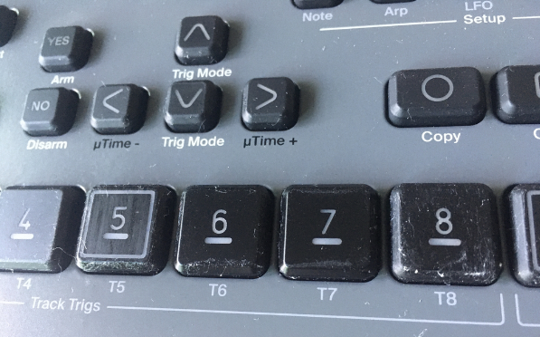
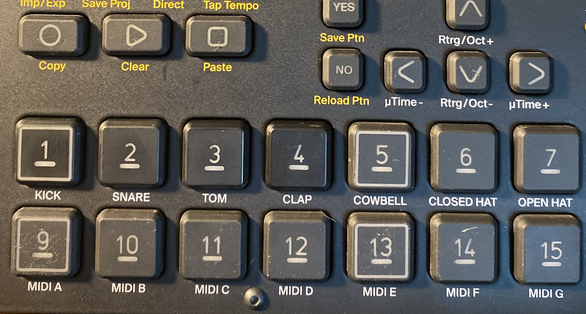

Спустя пару лет использования, поверхность клавиш на Digitakt/Digitakt 2 становится липкой. Это происходит из-за клея, который входит в состав наносимого покрытия, которое на первых порах делает кнопки не скользкими. Данный клей со временем начинает разрушаться, и покрытие становится липким. К липкому покрытию прилипает ворс и пыль, в некоторых местах покрытие вытирается до чистого пластика.
Вот как это выглядит в реальности:

Проблема упрощается тем, что кнопки достаточно легко сниманются без разбора корпуса аппарата, достаточно подцепить их каким-нибудь тонким пластиковым (не металлическим!) предметом. После снятия их легко можно обрабатывать.
Вот какие решения придумывают владельцы Digitakt/Digitakt 2:
Вариант 1 - промыть кнопки в мыльном растворе и после высыхания обработать клавиши детской присыпкой (тальком). Кнопки прибретут соответсвующий оттенок.
Вариант 2 - промыть кнопки в мыльном растворе и после высыхания обработать фиксирующим спреем, тот, что используют для рисунков углем или графитом. Он прозрачный.
Вариант 3 - купить черную матовую спрей-краску для кожи, например KUDO KU-5271M. Перед применением можно заклеить центральную часть кнопки со значком квадратиком из бумажного скотча или самоклеющимися наклейками от какого-нибудь детского набора с квадратными наклейками подходящего размера. Разложить кнопки и распылить на них краску в один слой. Дать просохнуть согласно инструкции на баллончик. Пощупать результат, при необходимости повторить. Слой краски будет настолько тонким, что сильно не снизит светодиодную подсветку.
Вариант 4 - воспользоваться универсальным акриловым бесцветным прозрачным матовым лаком, KUDO KU-9004 тоже в баллончике. Заклеивать центр клавиши не нужно. Это самый адекватный способ.
Вариант 5 - очистить кнопки от липкой части просто начав тереть их мягкой тряпкой. Можно подогревать феном. Делать это надо аккуратно, чтобы не стереть сам рисунок клавиши.
Вот как выглядят очищенные кнопки 1-4 по справнению с еще не обработанными на Digitakt первой модели:

Очищенные кнопки имеют приятный гладкий, жесткий пластик, и внешний вид у них всегда чистый.